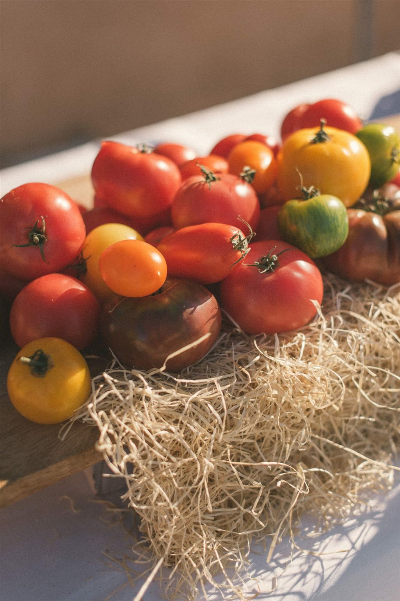
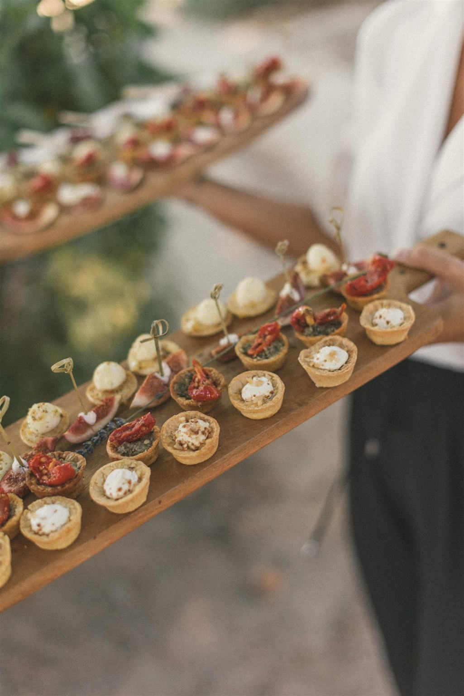
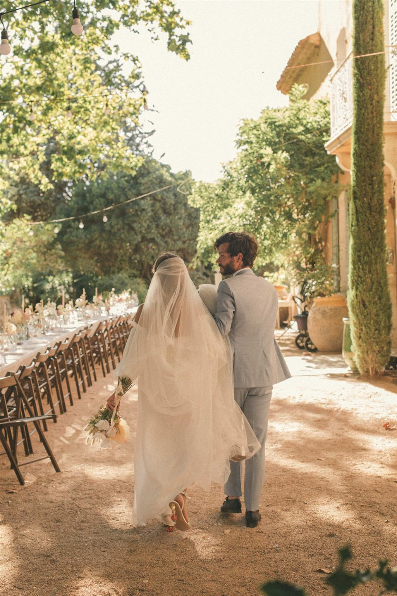
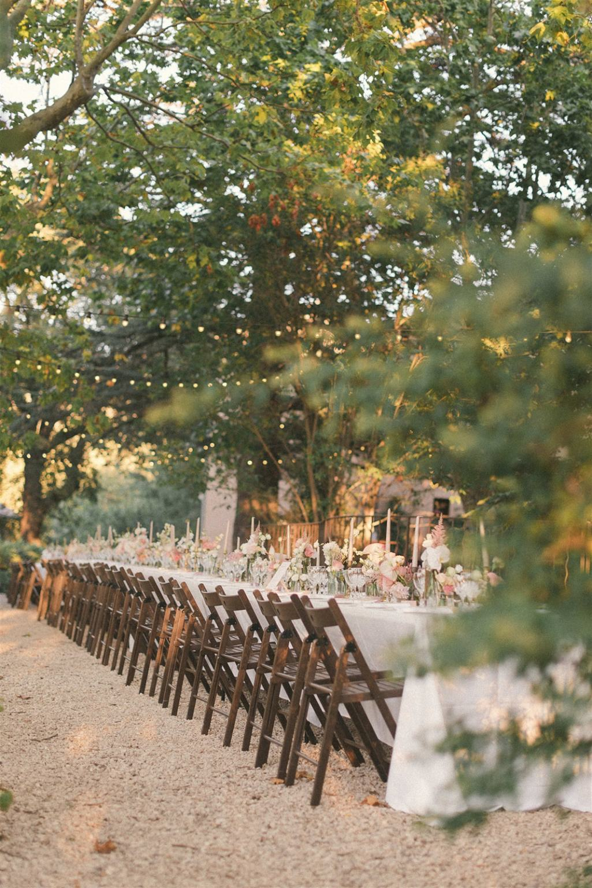
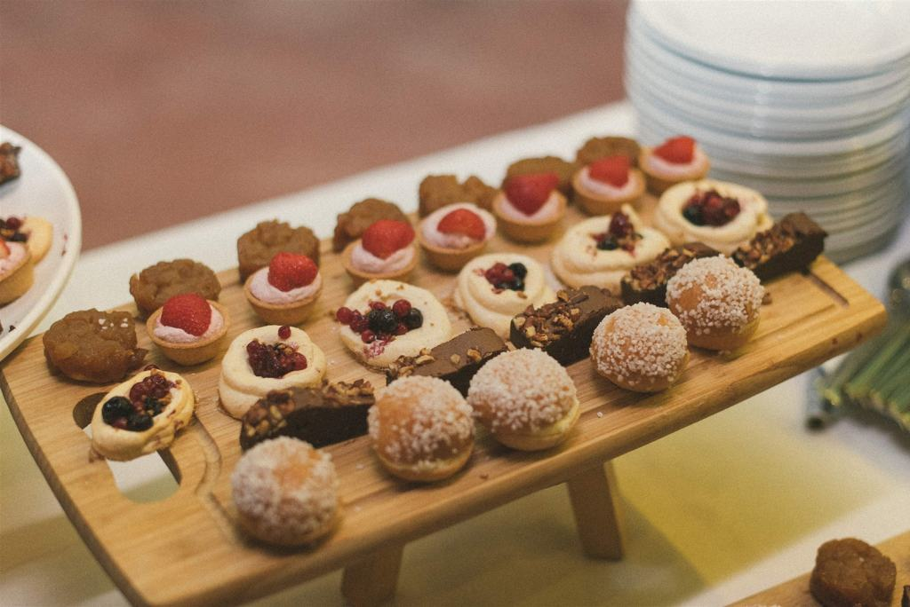

Un choix éthique et durable pour votre grand jour
Le choix du menu est l’une des décisions les plus importantes lors de l’organisation d’un mariage. De plus en plus de couples choisissent d’opter pour un mariage végétarien ou végétalien, non seulement pour des raisons de santé, mais aussi pour leur impact environnemental. Un mariage végétarien ou végétalien permet de célébrer l’amour tout en faisant un geste concret pour la planète. Voici pourquoi vous devriez envisager cette option pour votre grand jour.
1. Un impact environnemental réduit
L’un des principaux arguments en faveur d’un mariage végétarien ou végétalien est l’impact réduit sur l’environnement. L’industrie de la viande, notamment la production de viande rouge, est l’une des plus polluantes en termes d’émissions de gaz à effet de serre. En choisissant un menu végétarien ou végétalien, vous réduisez votre empreinte carbone, contribuez à la conservation des ressources naturelles et à la lutte contre le changement climatique.
La production de légumes, fruits, céréales et légumineuses nécessite généralement moins de terres, d’eau et d’énergie que la production de viande, ce qui en fait une option beaucoup plus durable.
2. Un menu plus sain et inclusif
Les options végétariennes et végétaliennes sont non seulement meilleures pour l’environnement, mais elles sont également plus saines. Ces régimes alimentaires sont généralement plus riches en nutriments essentiels comme les fibres, les vitamines, les minéraux et les antioxydants, tout en étant moins riches en graisses saturées et en cholestérol.
Un mariage végétarien ou végétalien est également plus inclusif, car il répond aux besoins alimentaires de vos invités qui suivent un régime végétarien, végétalien ou même sans gluten. Cela vous permet d’offrir une expérience culinaire à tous vos invités, sans les exclure.
3. Un menu plus créatif et original
Un mariage végétarien ou végétalien peut être l’occasion d’explorer une grande variété de plats créatifs et originaux. En éliminant la viande, vous ouvrez la porte à une multitude de saveurs et de textures intéressantes qui sont souvent négligées dans les menus traditionnels. Des plats à base de légumes de saison, des protéines végétales comme le tofu, le tempeh, les lentilles, et des sauces maison à base d’herbes et d’épices, peuvent apporter une touche unique et originale à votre réception.
De plus, de nombreux chefs spécialisés dans la cuisine végétarienne ou végétalienne sont très créatifs et peuvent proposer des options raffinées qui épateront vos invités.


4. Moins de gaspillage alimentaire
Les mariages végétariens ou végétaliens ont tendance à produire moins de gaspillage alimentaire, car les produits végétaux sont souvent plus faciles à conserver et à redistribuer que les restes de viande. Si vous avez des excédents de nourriture, il sera plus simple de les donner à des associations caritatives ou de les conserver, ce qui permet de réduire le gaspillage et d’aider ceux qui en ont besoin.
De plus, en choisissant des produits locaux et de saison, vous réduisez non seulement le gaspillage alimentaire, mais vous soutenez également l’agriculture locale et réduisez l’empreinte carbone liée au transport des aliments.
5. Réduire la souffrance animale
Choisir un menu végétarien ou végétalien pour votre mariage est également un geste éthique. L’industrie de la viande est souvent critiquée pour ses pratiques cruelles envers les animaux. En optant pour des alternatives végétales, vous contribuez à réduire la demande de produits d’origine animale et soutenez des pratiques agricoles plus humaines et éthiques. Si l’éthique joue un rôle important dans vos valeurs, ce choix peut également renforcer le message que vous souhaitez véhiculer à vos invités.
6. Un coût plus abordable
Les plats végétariens et végétaliens peuvent être plus économiques que ceux à base de viande, notamment parce que les protéines végétales comme les lentilles, les pois chiches et les haricots sont généralement moins chères que la viande. Cela peut vous permettre de faire des économies tout en offrant un menu délicieux, nutritif et durable.
De plus, en réduisant le coût des produits d’origine animale, vous pouvez réinvestir cet argent dans d’autres aspects de votre mariage, comme la décoration, les animations ou même un repas encore plus raffiné pour vos invités.
7. Soutenir les initiatives éthiques et locales
Opter pour un menu végétarien ou végétalien peut également vous amener à choisir un traiteur ou des fournisseurs qui sont eux-mêmes engagés dans des pratiques durables et éthiques. De nombreux traiteurs spécialisés dans la cuisine végétarienne ou végétalienne privilégient des produits locaux, biologiques et équitables, ce qui soutient l’agriculture durable et les circuits courts.
En travaillant avec ces prestataires, vous soutenez non seulement des entreprises responsables, mais vous contribuez également à promouvoir une alimentation plus éthique et respectueuse de l’environnement.



8. Sensibiliser vos invités à une alimentation durable
En choisissant un mariage végétarien ou végétalien, vous avez l’opportunité de sensibiliser vos invités aux bienfaits d’une alimentation plus durable. C’est un moyen subtil mais efficace de partager vos valeurs et d’encourager les autres à réfléchir à leurs choix alimentaires. De plus, cela peut ouvrir la discussion sur des sujets importants comme la réduction de l’empreinte carbone, la consommation de produits locaux et le respect des animaux.
Conclusion : un mariage végétarien ou végétalien, un choix éthique pour un jour exceptionnel
Opter pour un mariage végétarien ou végétalien est une excellente façon de concilier l’éthique, la durabilité et la convivialité. Ce choix permet de célébrer votre union tout en respectant la planète, en réduisant l’empreinte carbone de votre événement, et en offrant à vos invités une expérience culinaire mémorable. Que ce soit pour des raisons environnementales, de santé ou éthiques, choisir un menu végétarien ou végétalien est un geste fort qui marquera ce jour important d’une touche de conscience et de respect envers notre monde.
Si cet article vous parle et que vous avez envie d’explorer cette alternative pour votre mariage en Provence, n’hésitez pas à m’envoyer un message !
Mariage FX & Mélanie. Photos par La Dichosa et traiteur Maison Nans